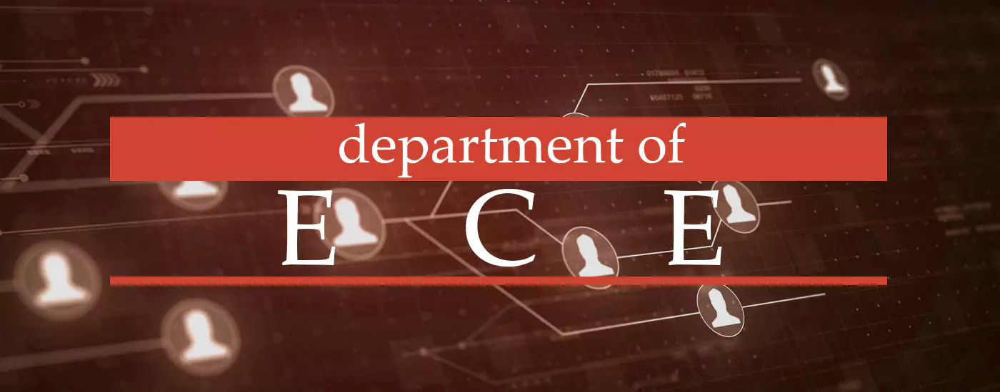

The Electronics and Communication Engineering department focuses on communication systems, embedded systems, VLSI, and signal processing. Students gain strong theoretical knowledge and practical skills through well-equipped labs and projects. The department prepares graduates for careers in electronics industries, telecommunications, and core engineering sectors with innovation and technical excellence.